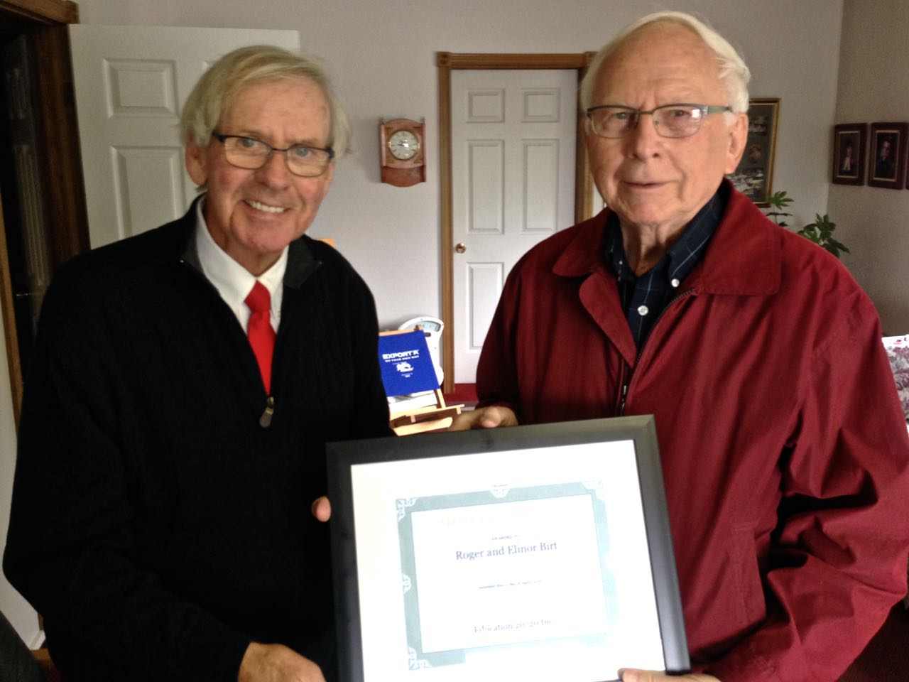

Open
Education

41 June 25, 2016
It is the nature of knowledge that no one knows everything – Author unknown
Criterion-referenced testing
Criterion-referenced testing is an approach to assessment in which a student’s performance is compared to a predefined set of criteria or standards and not with the work of other test takers. Criterion-referenced tests are used to determine whether a person has reached a predetermined level of achievement and results are usually reported in terms of pass or fail, a driver’s test or an apprentice exam are good examples; all who take the exam may pass or all may fail.
The goal with these tests is to determine the level that a candidate has achieved on a certain skill or set of skills and to use it as a basis for making decisions about job entry, certification, or licensure. The key to criterion referenced testing is clearly-stated outcomes, a set of clearly defined levels, an external benchmark and the consistent application of the assessment process.
The assessment process must be transparent and the grades derived should be defined in terms a student understands – students should be able to trace their grades to the specifics of their performance on the tasks that were set. In fact, it is well understood that the discussion between teacher and learner about the grade assigned is an important part of the learning experience; criterion-referencing provides a framework for students and teachers to fully engage in the learning process.
Separating the teaching and grading process increases consistency and minimizes bias.
Presentation

Don Glendenning (right) thanks Roger Birt, President, R. Birt and Associates, for his ongoing support for Education 20/20 Inc.
Digital Pedagogy Lab Institute
UPEI's Faculty of Education is hosting PEI's inaugural Digital Pedagogy Lab institute (#DigPed) from July 13 to 15, 2016. The #DigPed model brings educators together to engage in hands-on activities with key digital tools, concepts, and leaders to build sustainable and innovative educational practices. The three-day event aims to foster a collaborative learning community across all levels of PEI education, building critical capacity in technology integration and digital literacies across our system. For more details:
To register, click here
Hashtag #DigPed
Dave Atkinson at (902) 620-5117 or datkinson@upei.ca
Editor – Don Glendenning
_______________________________________
Education 20/20 Inc.
101 Kent St., PO Box 624 / 101, rue Kent, B.P. 624
Charlottetown, PEI / Charlottetown (Î.-P.-É.) C1A 1M0
Tel./Tél. : 902-892-2060
Email/Courriel : pei@education2020.ca
URL : www.education2020.ca
Pédagogie
ouverte
41 25 juin 2016
C’est la nature de la connaissance que personne ne peut tout savoir (traduction libre) – auteur inconnu
Test axé sur des critères
Le test axé sur des critères est une approche selon laquelle l'évaluation de la performance d'un élève est comparée à un ensemble prédéfini de critères ou de normes et non pas avec le travail des autres personnes testées. Le test axé sur des critères est utilisé afin de déterminer si une personne a atteint un degré d’apprentissage prédéterminé et les résultats sont généralement présentés en termes de succès ou d'échec, le test de conduite ou l’examen d'apprenti en sont des exemples; tous ceux qui prennent l'examen peuvent réussir ou ils peuvent échouer.
Le but de ces tests est de déterminer si un candidat a atteint une certaine habileté ou un ensemble de compétences et fournira le fondement pour prendre des décisions en matière d’embauche, de certification ou d'autorisation d'exercer. La clé du test axé sur des critères est des résultats clairement énoncés, une série de niveaux clairement définis, une référence externe et l'application uniforme du processus d'évaluation.
Le processus d'évaluation doit être transparent et les notes qui en sont dérivées doivent être définies de sorte que l’étudiant puisse bien les comprendre – les élèves devraient être en mesure de retracer leurs notes aux spécificités de leur performance sur les tâches qui ont été définies. En fait, il est bien entendu que la discussion entre l'enseignant et l'apprenant concernant la note attribuée est un élément important de l'expérience en matière d’apprentissage; le test axé sur des critères constitue un cadre de référence afin que les étudiants et les enseignants s’engagent à participer pleinement dans le processus d'apprentissage.
La séparation de l'enseignement et du processus de classement améliore d’autant la cohérence et réduit le risque de biais.
Présentation
M. Don Glendenning (à droite) remercie M. Roger Birt, président de R. Birt and Associates pour son soutien continu de l’organisme Education 20/20 Inc.
Laboratoire de recherche en pédagogie numérique
La faculté d’éducation de l'Université de l'Île-du-Prince-Édouard (UPEI) accueillera le laboratoire de recherche en pédagogie numérique (#DigPed) du 13 au 15 juillet prochain. Le modèle #DigPed regroupera des éducateurs afin qu’ils se livrent à des activités pratiques avec des outils, des concepts et des leaders numériques en vue de mettre en œuvre des pratiques éducatives durables et novatrices. L'activité de trois jours a pour but de favoriser une communauté d'apprentissage collaboratif de tous les niveaux de scolarité de l’Île et de renforcer les capacités essentielles en matière d'intégration de la technologie et de littératie numérique à l’échelle de notre système. Pour plus de détails, voir :
Pour s’inscrire, cliquer sur click here
Hashtag #DigPed (mot-clé diésé)
Contacter M. Dave Atkinson au (902) 620-5117 ou datkinson@upei.ca
Rédacteur – Don Glendenning
_______________________________________
Education 20/20 Inc.
101 Kent St., PO Box 624 / 101, rue Kent, B.P. 624
Charlottetown, PEI / Charlottetown (Î.-P.-É.) C1A 1M0
Tel./Tél. : 902-892-2060
Email/Courriel : pei@education2020.ca
URL : www.education2020.ca